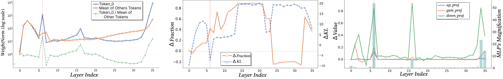
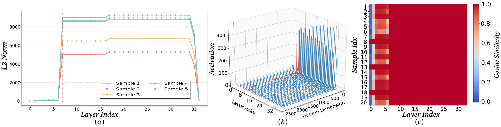
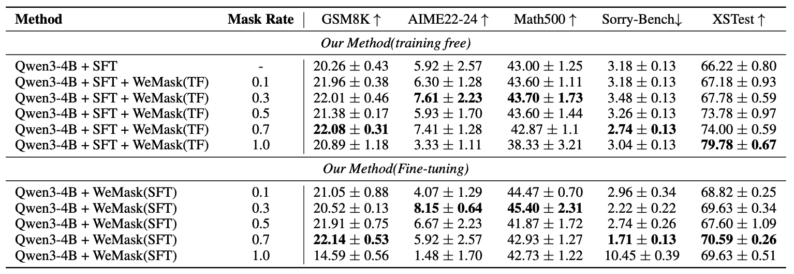
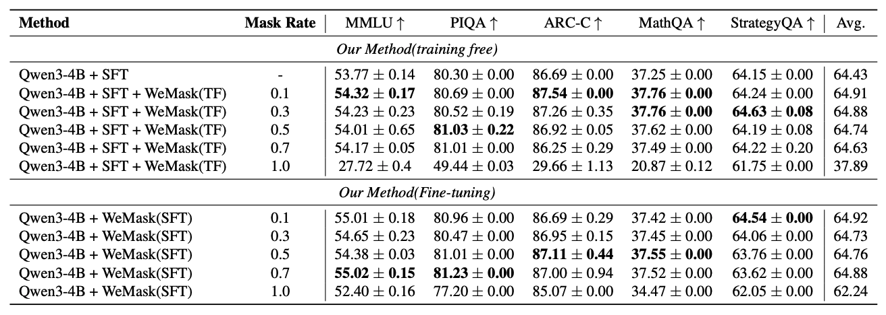
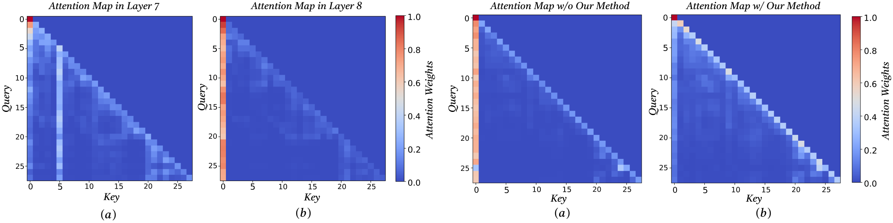

We investigate the origins of massive activations in large language models (LLMs) and identify a specific layer named the Massive Emergence Layer (ME Layer), that is consistently observed across model families, where massive activations first emerge and subsequently propagate to deeper layers through residual connections. We show that, within the ME Layer both the RMSNorm and the FFN parameters jointly contribute to the emergence of massive activations. Once formed, the massive activation token representation remains largely invariant across layers, reducing the diversity of hidden representations passed to the attention module. Motivated by this limitation, we propose a simple and effective method to reduce the rigidity of the massive activation token. Our approach consistently improves LLM performance across multiple tasks, including instruction following and math reasoning, in both training free and fine tuning settings. Moreover, we show that our method mitigates attention sinks by selectively weakening their influence, elucidating their origin at the hidden state level and shedding new light on principled mitigation strategies.




